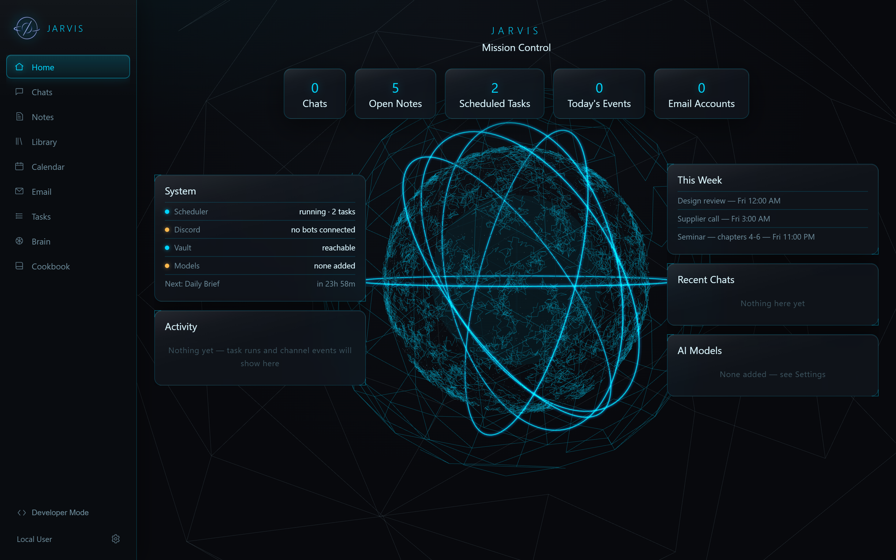
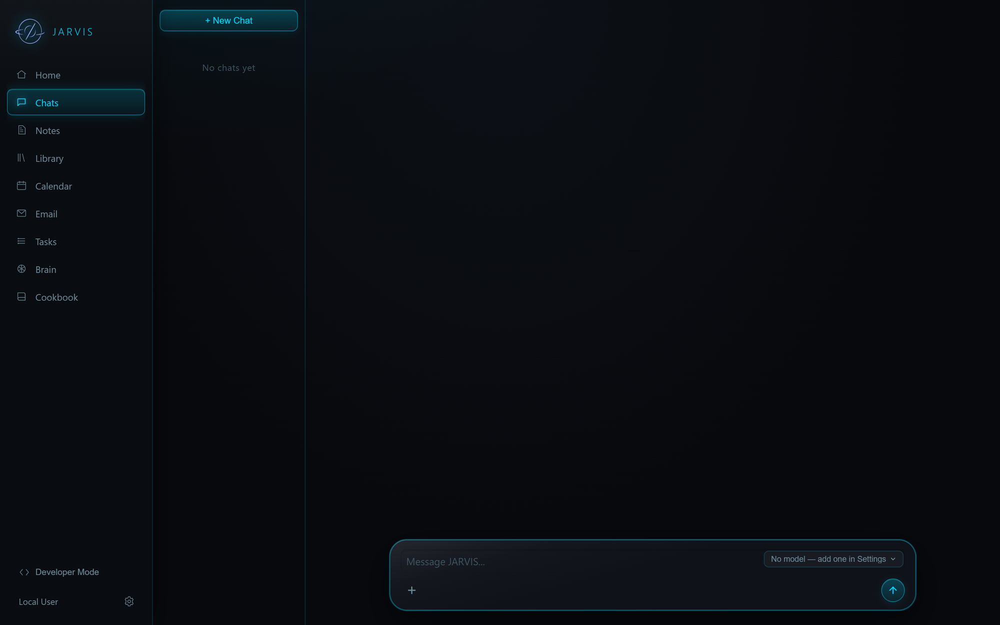
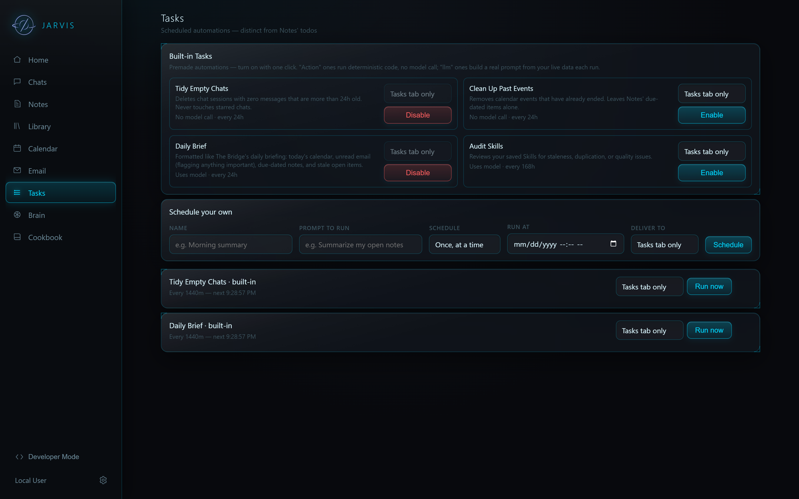
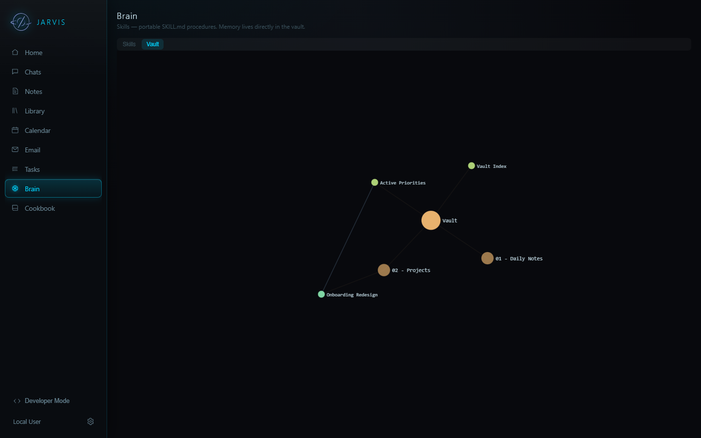
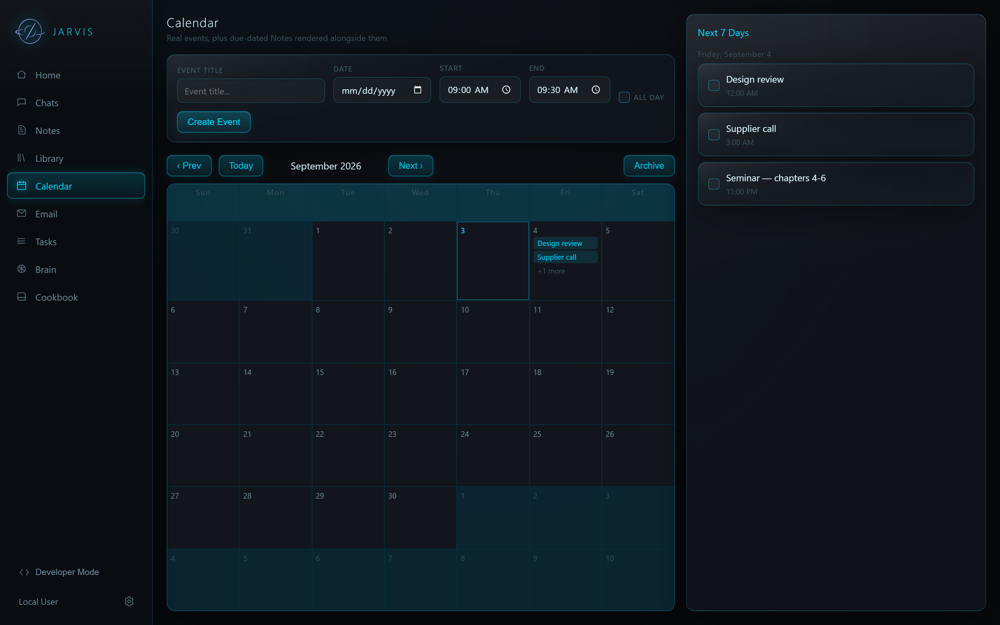
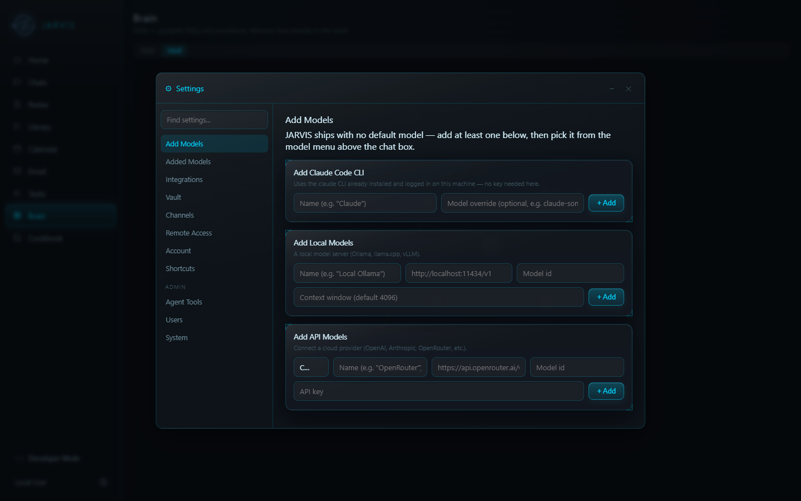

JARVIS is a downloadable AI workspace and agent harness. Bring whichever model you want, keep its memory in a folder of markdown you own, and run the whole thing locally.

Everything runs on your machine. Your conversations, notes and credentials never leave it unless you point a model at a cloud provider yourself.
Claude via the Agent SDK, any OpenAI-compatible endpoint, Ollama, or the built-in local engine. Choose per conversation — no default, no lock-in.
Long-term memory is a folder of markdown notes, not a database. Open it in Obsidian, edit it by hand, keep it in your own backups.
Checkbox items in your vault's task list sync into Notes on every launch. Tick one in the app and it ticks in the file.
Live system health, what's scheduled next, and a real activity feed of what the system has actually been doing.
Run your own prompts on a timer, or built-ins like a Daily Brief that folds in your calendar, unread mail and stale items. Deliver the output to Discord.
Reusable SKILL.md procedures the model follows. Portable files — write your own,
or import someone else's.
Optional remote access over Tailscale with real HTTPS and a required login. Nothing is exposed to the public internet.
Describe a tab you want and JARVIS builds it, using the same file conventions the built-in tabs use. Ready-made tabs are one click.
Closing the window keeps it running in the tray, so scheduled tasks and remote access keep working. Updates install themselves on quit.
Screenshots from a real install, not mockups.
A focused conversation column with a floating composer. Attach files, scope a chat to a folder on disk, pull in a saved document or skill, and switch model mid-thread.


Turn on a built-in automation with one click, or schedule your own prompt. Each run's output is kept, and can be delivered straight to a channel instead of sitting in a tab.
Memory lives as linked markdown. The Brain tab renders it as a graph you can browse, and the same notes are what the model searches when you ask it something.


Due-dated notes render alongside real events, with CalDAV and iCal sync for the calendars you already keep.
Add a Claude CLI, a local server, or any API provider. Per-conversation choice means you can keep cheap local models for routine work and reach for a bigger one when it matters.

One installer. Nothing else to set up — a complete Python runtime ships inside the app, so it works on a machine that has never had Python on it.
JARVIS-Setup.exe from the latest release and run it. It installs for
your user only, so no admin rights are needed.